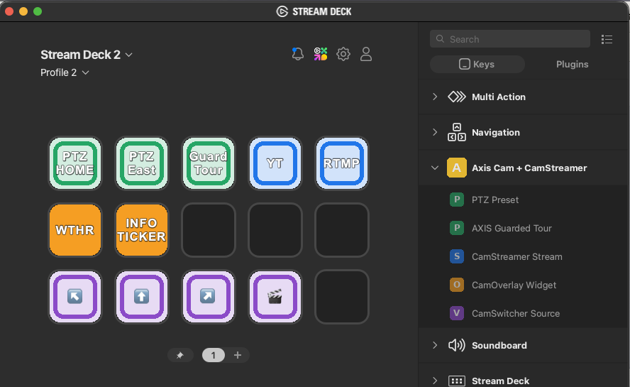
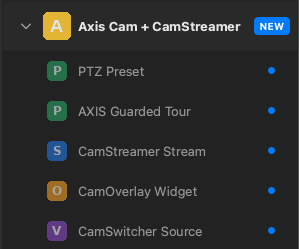
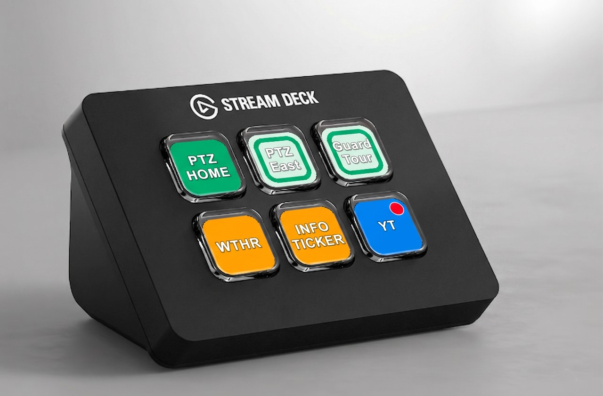
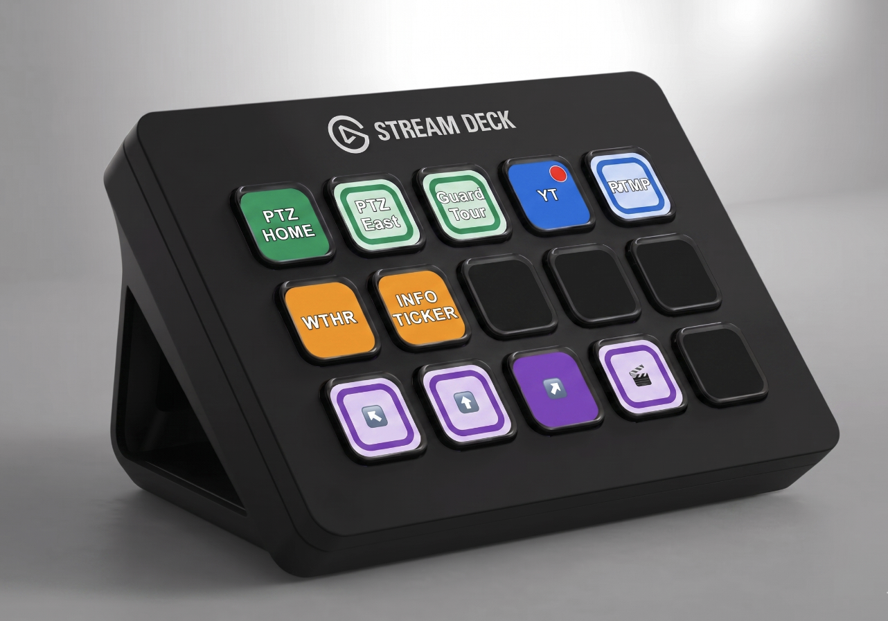
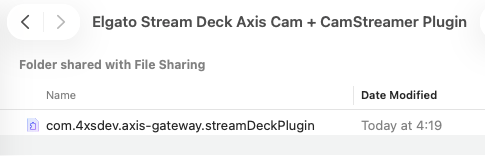
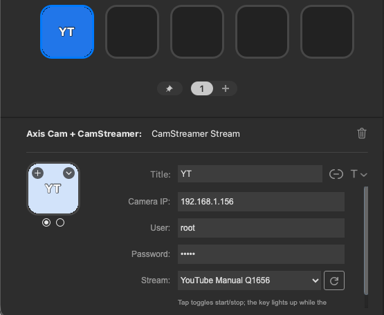
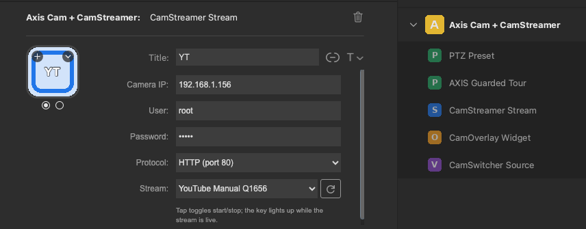
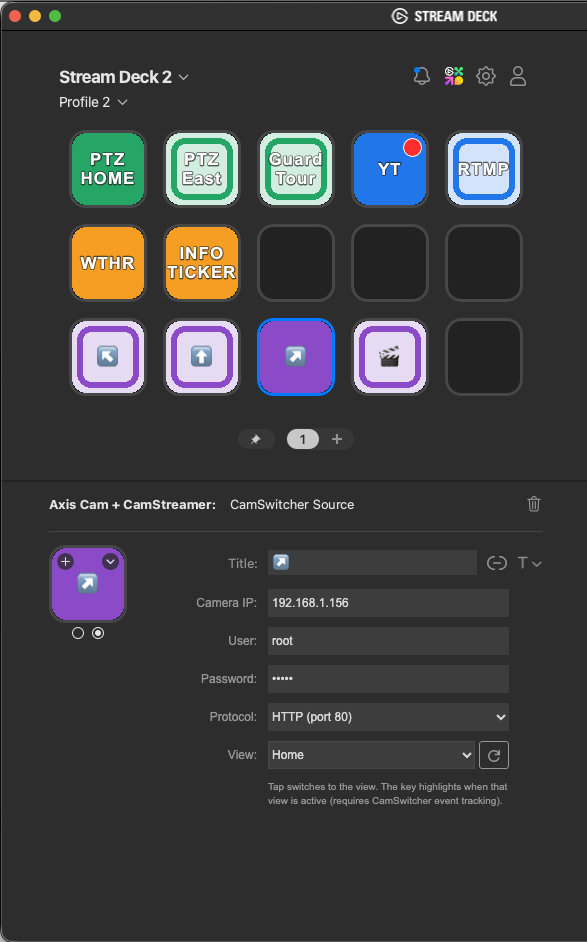

Trigger PTZ presets, run AXIS Guarded Tours, start and stop CamStreamer streams, toggle CamOverlay widgets and switch CamSwitcher sources — straight from your deck, with a live red tally dot so you always know what's on air.
NEW v1.0.2.1AXIS Guarded Tour control
Start or stop a camera's Guarded Tour with one press. The key reads the camera's real running state, and it shares a radio group with your PTZ presets — so only one PTZ action is ever lit per view area.

Running flag, so it survives a restart.Each action talks directly to the camera over digest-authenticated VAPIX and product CGIs. No cloud, no middleman.
Jump to any server preset position (or Home) on a click. Presets are read live from the camera.
Start or stop a Guarded Tour from a key. It lights while the tour is actually running, and shares the PTZ radio group with presets — only one runs per view area.
Start / stop a stream to YouTube, Facebook or any target. The key shows "Starting…" while connecting, then a solid red tally dot once live.
Show or hide a CamOverlay custom-graphics service instantly. The key reflects its current state.
Switch the live view between sources. The active view carries the red tally dot; the rest stay idle.

Stream and switcher keys mirror the camera in real time. When a stream is live or a view is on air, the key lights up with a steady red tally dot — the same signal every production crew already understands.
From the 6-key Mini to the 32-key XL — lay out as many camera, stream and switcher keys as your show needs.


Works with the Elgato Stream Deck app 6.5+ on macOS and Windows.
com.4xsdev.axis-gateway.streamDeckPlugin from the v1.0.2.1 release.
IP, user and password once — they're shared across keys.
Prefer zero setup? The camera can export a ready-made .streamDeckProfile with all your presets and streams pre-filled — just open it from the shared folder.

An exported profile, ready to double-click.
Pick the action on the key, fill in the camera, then choose from the live dropdown — values are read straight from your camera.

Enter the camera IP, user and password, then choose the stream from the dropdown — the list is fetched live from CamStreamer. Tapping the key toggles start/stop, and it lights up with the red tally while you're on air.


The plugin runs inside the Stream Deck app and talks straight to the camera's own HTTP APIs over digest authentication.
Stream Deck key ──► plugin (Node) ──HTTP digest──► Axis camera
├─ VAPIX PTZ /axis-cgi/com/ptz.cgi
├─ CamStreamer /local/camstreamer/…
├─ CamOverlay /local/camoverlay/api/…
└─ CamSwitcher /local/camswitcher/…You enter the camera IP, user and password once (stored in Stream Deck's local global settings). Digest auth is handled by the plugin, and the credentials are sent only to your camera.